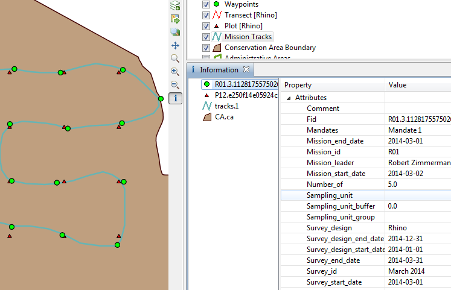

Survey queries are used to display details of survey related observations. Incident queries limit results to waypoints and their associated properties including sampling units, mission and survey properties. Observation details are not included.
Only waypoint/incident records that match the selected filters are displayed. No summarizing takes place (ie. no totals, amounts, aggregations, etc.). The resulting table includes all the survey, mission, and sampling unit details. Results can be viewed in a table or on a map. The map includes an observation layer, a mission track layer and sampling unit layers.
 |
Example Survey Incident Query |
Incident vs Observation
An observation is a single item observed and consists of exactly one category from the datamodel and all its associated attributes. An incident is a collection of observations that occur at the same point and same time (a Waypoint).
Incident vs Observation Filters
Incident queries support both incident filters and observation filters. Observation filters only consider the individual observations when filtering data. As a result you cannot query across categories. Incident filters look at all observations at a given incident when filtering data. This allows you to query across categories.
Observation filters will return only incidents where at least one observation matches the given filter. Incident filters will return all waypoints where the set of observations match the filter.